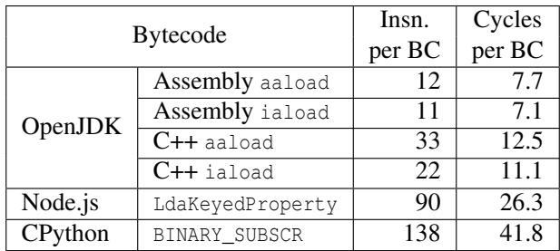
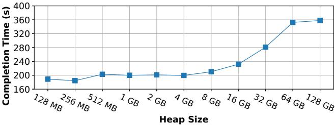
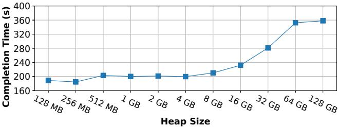

Investigating Managed Language Runtime Performance: Why JavaScript and Python are 8x and 29x slower than C++, yet Java and Go can be Faster? 论文解析¶
0. 论文基本信息¶
作者 (Authors): David Lion, Adrian Chiu, Michael Stumm, et al.
发表期刊/会议 (Journal/Conference): USENIX ATC
发表年份 (Publication Year): 2022
研究机构 (Affiliations): University of Toronto, YScope Inc.
1. 摘要¶
目的
- 对当前主流的托管语言（Managed Language）运行时进行深入、客观的性能分析与比较，旨在解答为何 JavaScript 和 Python 相对于 C++ 基准存在巨大性能差距（分别慢 8x 和 29x），而 Java 和 Go 却能与之竞争甚至在某些场景下超越。
- 破除业界关于语言性能的“宗教式”争论和缺乏严谨数据支撑的博客观点，为开发者在面临性能瓶颈时的语言选型提供科学依据。
- 识别并量化不同运行时（如解释器、JIT编译器、垃圾回收、并发模型）中具体的性能开销来源。
方法
- 构建统一基准测试套件 (LangBench)：从零开始开发了 6 个涵盖不同复杂度和应用场景（计算密集、内存密集、I/O密集、并发性）的应用，并为每种语言（C++, Go, Java, JavaScript, Python）实现，共形成 12 个基准测试。
- 深度运行时插桩 (Runtime Instrumentation)：首次公开提供了对 OpenJDK, V8/Node.js, 和 CPython 运行时的深度插桩工具，能够精确测量：
- 解释器中任意字节码指令的执行开销。
- V8 JIT编译代码中动态类型检查和边界检查的具体开销。
- 受控实验环境：在统一的硬件和操作系统环境下，使用各语言最主流的实现（如 OpenJDK 13, CPython 3.8.1, Go 1.14.1, Node.js 13.12.0）和优化选项（如 GCC -O3）进行测试，并多次运行取平均值。
结果
- 整体性能差距显著：
- V8/Node.js 和 CPython 平均比 C++ 慢 8.01x 和 29.50x。
- OpenJDK 和 Go 性能极具竞争力，仅比 C++ 慢 1.43x 和 1.30x，并且在 3 个基准测试中超越了 C++。
- 关键性能瓶颈被定位：
- V8 的主要开销在于 动态类型检查 和 边界检查。在数独和排序基准中，这些检查分别占用了 41.83% 和 87.43% 的执行时间。通过创建“packed”数组可优化 V8 性能 1.48x。
- CPython 的主要开销在于其 纯解释器模式。即使与同样需要动态类型检查的 V8 相比，其解释器效率也低 2.07x，因其用 C 实现，而 V8 的解释器是手写的 IR。
- OpenJDK 和 Go 的主要开销在排序基准中来自于 GC 写屏障 (Write Barrier)。OpenJDK 默认的 G1 GC 写屏障指令数（44条）远多于 Parallel GC（5条），导致性能差异巨大。
- 可扩展性差异巨大：
- CPython（受 GIL 限制）和 Node.js（单线程事件循环）无法有效利用多核。在 CPU 密集型任务中，增加线程/进程反而因序列化开销导致性能下降。
- Go 和 OpenJDK 能够良好地横向扩展，在多线程键值存储基准中，Go 甚至以 1.02x 的优势超越 C++。
- 运行时抽象带来的意外优势：
- OpenJDK 的移动式 GC 通过重排内存对象，显著改善了缓存局部性，使其在单线程键值存储和图着色基准中分别获得 1.46x 和 1.37x 的性能提升。
- Go 的 Goroutine 调度器 抽象了内核线程，大幅减少了 上下文切换（约 220万次）和内核线程数量，从而在高并发网络 I/O 场景下胜出。
- 托管语言的 I/O 抽象 允许运行时自动选择最优的系统调用（如先
fstat再一次性read），而 C++ 需要手动优化才能达到同等效果。
 Figure 2: Relative completion times for various language implementations normalized to optimized code under GCC. Note the logarithmic scale of the y axis. “LA” refers to the log analysis application. The numbers at the bottom shows the benchmark’s absolute execution time in the C++ implementation. For benchmarks with concurrency, the “Best” bars are annotated with the thread count that results in best completion time. For key-value store and file server it is the number of client threads, not the number of threads used server side. For GCC and OpenJDK, the server creates 1 (kernel) thread to handle each client thread, so the number of server-side threads is the same as the client. For both Node.js and CPython, their best completion time in key-value store is achieved when using a single server-side thread (due to their scalability characterstic described in §7). As for the file server benchmark, both Node.js and CPython’s best performance is achieved when using 64 server-side threads (§7). The number of server-side threads in Go is automatically determined by the runtime as described in §8.2. The number of threads for log analysis is the number of worker threads (as there is no client).
Figure 2: Relative completion times for various language implementations normalized to optimized code under GCC. Note the logarithmic scale of the y axis. “LA” refers to the log analysis application. The numbers at the bottom shows the benchmark’s absolute execution time in the C++ implementation. For benchmarks with concurrency, the “Best” bars are annotated with the thread count that results in best completion time. For key-value store and file server it is the number of client threads, not the number of threads used server side. For GCC and OpenJDK, the server creates 1 (kernel) thread to handle each client thread, so the number of server-side threads is the same as the client. For both Node.js and CPython, their best completion time in key-value store is achieved when using a single server-side thread (due to their scalability characterstic described in §7). As for the file server benchmark, both Node.js and CPython’s best performance is achieved when using 64 server-side threads (§7). The number of server-side threads in Go is automatically determined by the runtime as described in §8.2. The number of threads for log analysis is the number of worker threads (as there is no client).
结论
- 托管语言的性能表现与其运行时的设计哲学密切相关。静态类型、成熟的 JIT 编译 和 高效的并发模型 是 Java 和 Go 能与 C++ 竞争的关键。
- 动态类型 和 缺乏 JIT 是 JavaScript (V8) 和 Python (CPython) 性能落后的根本原因，且它们的并发模型严重限制了在多核时代的可扩展性。
- 运行时抽象并非总是带来开销。在特定场景下，如 GC 的内存整理、用户级线程调度和 I/O 优化，这些高级抽象反而能产生超越手动优化 C++ 代码的性能。
- 该研究提供的 LangBench 基准套件 和 运行时插桩工具 为开发者理解和优化其应用性能提供了宝贵的、可复现的科学方法。
2. 背景知识与核心贡献¶
研究背景与动机
- 当前最流行的编程语言（如 JavaScript, Java, Python）均为 managed languages（托管语言），因其能显著提升开发效率和代码安全性而被广泛采用。
- 随着系统规模扩大，性能问题逐渐凸显。开发者常陷入两难：是继续在现有语言上进行复杂优化，还是耗费巨大成本将代码迁移到更“高性能”的语言（如 C++、Rust）。
- 业界对托管语言性能的认知存在巨大分歧，主要依赖缺乏严谨数据的博客争论，而非科学的实证研究。
- 现有基准测试套件（如 DaCapo）通常针对单一语言，无法进行跨语言的公平比较。
- 托管语言的运行时（Runtime）极其复杂（包含解释器、JIT 编译器、垃圾回收 GC、线程库等），且缺乏有效的剖析工具来量化各组件的开销（例如，V8 未暴露动态类型检查的性能计数器）。
核心贡献
- 首创的运行时剖析工具：首次公开了针对 OpenJDK, V8/Node.js, 和 CPython 这三大主流非静态编译运行时的深度剖析工具。这些工具能够：
- 在 字节码级别 精确测量任何指令在解释器中的执行开销。
- 量化 V8 JIT 编译代码中 动态类型检查 和 边界检查 的具体开销。
- 全新的基准测试套件 LangBench：从零开始构建了 6 个 覆盖不同场景（计算密集、内存密集、I/O 密集、并发性）的应用，并为每种语言（C++, Go, Java, JavaScript, Python）提供了实现，共形成 12 个 基准测试。该套件旨在公平地暴露不同语言在 类型系统、执行模式 和 并发模型 上的设计差异。
- 深入的定量对比分析：基于上述工具和基准，得出了多项关键发现：
- 性能差距巨大：平均而言，V8/Node.js 和 CPython 分别比 C++ 慢 8.01x 和 29.50x；而 OpenJDK 和 Go 则非常接近 C++，仅慢 1.43x 和 1.30x。
- 可扩展性瓶颈：CPython（受 GIL 限制）和 V8/Node.js（单线程事件循环）无法有效利用多核，增加线程数甚至会因序列化开销而降低性能。
- 抽象亦可加速：在特定场景下，托管语言的运行时抽象（如 GC 的对象重定位、Go 的用户级线程调度、高级 I/O 封装）反而能超越手写的 C++ 代码，实现 性能反超。
Figure 2: Relative completion times for various language implementations normalized to optimized code under GCC. Note the logarithmic scale of the y axis. “LA” refers to the log analysis application. The numbers at the bottom shows the benchmark’s absolute execution time in the C++ implementation. For benchmarks with concurrency, the “Best” bars are annotated with the thread count that results in best completion time. For key-value store and file server it is the number of client threads, not the number of threads used server side. For GCC and OpenJDK, the server creates 1 (kernel) thread to handle each client thread, so the number of server-side threads is the same as the client. For both Node.js and CPython, their best completion time in key-value store is achieved when using a single server-side thread (due to their scalability characterstic described in §7). As for the file server benchmark, both Node.js and CPython’s best performance is achieved when using 64 server-side threads (§7). The number of server-side threads in Go is automatically determined by the runtime as described in §8.2. The number of threads for log analysis is the number of worker threads (as there is no client).
3. 核心技术和实现细节¶
0. 技术架构概览¶
整体技术架构
本文的核心目标是系统性地分析和比较主流 managed language（托管语言）运行时的性能。其技术架构围绕三个相互支撑的支柱构建：一套深度定制的 runtime instrumentation（运行时插桩）、一个精心设计的 LangBench benchmark suite（基准测试套件），以及一套严谨的 comparative analysis methodology（对比分析方法论）。
-
运行时插桩 (Runtime Instrumentation)
- 作者为 OpenJDK (HotSpot JVM)、V8/Node.js 和 CPython 这三个没有静态编译的运行时开发了深度插桩工具。
- 这些工具能够实现两种关键的细粒度性能剖析：
- 字节码级剖析：精确测量解释器中执行任意字节码指令所消耗的 CPU 周期数。
- 动态类型与边界检查剖析：量化 V8 JIT 编译代码中因动态类型检查和数组边界检查带来的开销。
- 插桩实现极具挑战性，特别是对于用手工汇编（JVM）或中间表示（IR, V8）编写的解释器。作者通过在解释器处理逻辑前后注入特定的 x86 指令（如
rdtscp）来读取 CPU 时间戳计数器（TSC）。  Figure 1: The sequence of assembly instructions inlined into the processing of each bytecode instruction.
Figure 1: The sequence of assembly instructions inlined into the processing of each bytecode instruction.
-
LangBench 基准测试套件 (LangBench Benchmark Suite)
- 为了解决现有基准测试（如 DaCapo）无法跨语言公平比较的问题，作者从零开始构建了 LangBench。
- 该套件包含 6 个应用程序，覆盖了从微基准到真实应用的不同复杂度，并刻意设计以暴露不同语言在 typing（类型系统）、execution modes（执行模式）和 concurrency models（并发模型）上的差异。
- 应用程序涵盖了多种工作负载特征：compute-intensive（计算密集型）、memory-intensive（内存密集型）、I/O-intensive（I/O 密集型）以及不同程度的 available concurrency（可用并发性）。
- 通过改变并发度和实现方式，最终形成了 12 个具体的基准测试。
- 所有应用均使用 C++ (GCC -O3)、Go、Java (OpenJDK)、JavaScript (Node.js/V8) 和 Python (CPython) 五种语言实现，确保算法和控制流在概念上完全一致，同时代码风格符合各语言的惯用法。
 Table 1: The applications and the component(s) they stress.
Table 1: The applications and the component(s) they stress.
-
对比分析方法论 (Comparative Analysis Methodology)
- 实验在统一的硬件和操作系统环境下进行（双路 Xeon E5-2630V3, Linux 4.15.0）。
- 以 C++ (GCC -O3) 作为性能基线，全面评估其他四种语言的 completion time（完成时间）、resource usage（资源使用）和 scalability（可扩展性）。
- 通过结合 LangBench 的宏观性能数据和 runtime instrumentation 提供的微观剖析数据，对性能差异的根本原因进行归因分析。
- 分析维度包括单线程性能瓶颈（如 V8 的类型检查、CPython 的解释器开销、GC 写屏障）和多线程可扩展性限制（如 Node.js 的 event loop 和 CPython 的 GIL）。
- Figure 2: Relative completion times for various language implementations normalized to optimized code under GCC. Note the logarithmic scale of the y axis. “LA” refers to the log analysis application. The numbers at the bottom shows the benchmark’s absolute execution time in the C++ implementation. For benchmarks with concurrency, the “Best” bars are annotated with the thread count that results in best completion time. For key-value store and file server it is the number of client threads, not the number of threads used server side. For GCC and OpenJDK, the server creates 1 (kernel) thread to handle each client thread, so the number of server-side threads is the same as the client. For both Node.js and CPython, their best completion time in key-value store is achieved when using a single server-side thread (due to their scalability characterstic described in §7). As for the file server benchmark, both Node.js and CPython’s best performance is achieved when using 64 server-side threads (§7). The number of server-side threads in Go is automatically determined by the runtime as described in §8.2. The number of threads for log analysis is the number of worker threads (as there is no client).
1. Runtime Instrumentation for Bytecode and Type Checking¶
核心目标与动机
- 该论文的核心贡献之一是为 OpenJDK (HotSpot JVM)、V8/Node.js 和 CPython 三大主流托管语言运行时开发并开源了深度运行时插桩 (Runtime Instrumentation) 工具。
- 其主要目标是解决现有性能分析工具的盲区，使开发者能够精确量化两类关键开销：
- 字节码解释器开销 (Bytecode Interpreter Overhead)：测量在解释器中执行任意一条字节码指令所消耗的 CPU 周期和指令数。
- 动态类型与边界检查开销 (Dynamic Type and Bounds Checking Overhead)：特指在 V8 的 JIT 编译代码中，为保证 JavaScript 动态特性安全而引入的检查逻辑所带来的性能损耗。
字节码级插桩的实现原理与挑战
- 通用概念：在每个运行时解释器处理特定字节码指令的代码块前后，注入一小段汇编代码，用于读取 CPU 性能计数器（如时间戳计数器
tsc、周期计数器、指令计数器）。 - 具体实现因运行时而异，面临巨大挑战：
- OpenJDK (HotSpot JVM):
- HotSpot 为 x86 平台提供了两个解释器：一个用 手写汇编 (hand-crafted assembly) 实现，另一个用 C++ 实现。论文对两者都进行了插桩。
- 挑战：汇编解释器的插桩需精确定位每条字节码的处理入口，并确保注入的测量代码（如
rdtscp指令）不会破坏寄存器状态。由于解释器代码是在 JVM 启动时动态写入内存的，插桩逻辑也必须遵循相同的机制。 - 注入代码示例：如图
85ff05ad0f7319d461425abd9875b38a6612f4aef500dd9a6c5c2df433f30632.jpg所示，通过rdtscp指令获取高精度时间戳，并通过寄存器操作拼接完整的 64 位计数值。
- V8/Node.js:
- V8 的解释器（Ignition）并非直接用汇编或 C++ 编写，而是用一种手写的中间表示 (hand-crafted IR) 描述。在 V8 启动时，其内置的 JIT 编译器会将此 IR 动态编译成本地机器码。
- 挑战：插桩工作变得极为复杂，需要同时修改两处：1) 在 IR 层面为目标字节码的处理逻辑添加一个新的、自定义的 IR 节点；2) 修改 JIT 编译器，使其在遇到这个新节点时，能生成正确的、用于读取性能计数器的汇编指令。
- 优势：由于解释器是动态生成的，用户只需在启动时指定要分析的字节码，无需重新编译整个 V8 引擎。
- CPython:
- CPython 的解释器是用 C/C++ 编写的，因此插桩相对直接，通过在主分发循环（main dispatch loop）中为目标字节码（如
BINARY_SUBSCR）添加条件判断和测量代码即可。 - 劣势：每次更改要分析的目标字节码，都需要重新编译整个 CPython 运行时，灵活性较差。
- CPython 的解释器是用 C/C++ 编写的，因此插桩相对直接，通过在主分发循环（main dispatch loop）中为目标字节码（如
- OpenJDK (HotSpot JVM):
动态类型与边界检查插桩的实现原理
- 目标：量化 V8 在 JIT 编译模式下，为 JavaScript 的动态特性（如对象属性访问
obj[prop]或数组索引arr[i]）所执行的安全检查的开销。 - 实现方式：
- 论文修改了 V8 的 JIT 编译器（TurboFan），使其能够识别用户指定的 JavaScript 函数。
- 对于这些函数，工具可以选择性地禁用其中的类型检查和边界检查逻辑。
- 通过对比启用检查和禁用检查两种模式下的执行时间，即可精确得出这些检查带来的性能开销。
- 应用场景与风险：
- 此方法允许开发者在已知代码安全（例如，数组和索引类型在运行时绝不会改变，即“monotype”）的情况下，创建一个不安全但高效的函数版本，用于性能剖析。
- 重要限制：该插桩仅针对 JIT 编译器，未应用于解释器。因为解释器的检查逻辑是全局性的，无法做到函数级别的细粒度开关，且其开销相对于解释器本身的巨大开销而言占比很小。
输入、输出与在整体研究中的作用
- 输入：
- 用户指定的目标：一个或多个字节码指令（用于分析解释器），或一个JavaScript 函数名（用于分析 V8 的类型/边界检查）。
- 待分析的应用程序（来自 LangBench 套件）。
- 输出：
- 精确的CPU 周期数、指令数等硬件性能计数器数据，关联到具体的字节码或检查点。
- 通过对比实验（如禁用检查前后）得出的性能开销百分比。
- 在整体研究中的作用：
- 提供因果证据：这些插桩工具是论文得出核心结论的关键。例如，通过 V8 的类型检查插桩，论文证明了在 Sudoku 和 Sort 基准测试中，高达 41.83% 和 87.43% 的执行时间花在了类型和边界检查上（见表
3aabc3024728493c3f8172a624453993134d912d237172c39d6d4abea4244c3f.jpg）。 - 指导优化：这些工具不仅能用于学术分析，还能直接指导开发者进行代码优化。例如，通过分析发现 V8 对稀疏数组（sparse arrays）的“hole”检查开销巨大，从而促使开发者改用“packed”数组（如
Int8Array）来规避此问题。 - 量化设计差异：通过比较不同运行时（如 CPython vs V8）执行同类字节码（如
BINARY_SUBSCRvsLdaKeyedProperty）的开销（见表d3470b599b510a483f65bc1ddae16863852f47251d264a833f048da1002da936.jpg），揭示了手写汇编/IR 解释器相较于 C++ 解释器的性能优势。
- 提供因果证据：这些插桩工具是论文得出核心结论的关键。例如，通过 V8 的类型检查插桩，论文证明了在 Sudoku 和 Sort 基准测试中，高达 41.83% 和 87.43% 的执行时间花在了类型和边界检查上（见表
2. LangBench Benchmark Suite¶
LangBench基准套件的设计与实现
- 核心目标：为了解决现有基准测试（如DaCapo）无法在JavaScript、Python、Java、Go和C++之间进行公平比较的问题，作者从零开始构建了LangBench。其核心在于确保所有语言实现都基于相同算法和相似控制流，同时保持代码的idiomatic（符合各语言惯用法）。
- 应用覆盖范围：套件包含6个精心设计的应用程序，旨在覆盖不同的计算和资源压力场景。
- Sudoku Solver：一个穷举搜索的数独求解器，源自Spec CPU 2017，主要压力点是CPU-intensive的递归和回溯。
- String Sorting：实现了Katajainen et al.提出的原地归并排序算法，对内存访问模式和指针操作敏感。
- Graph Coloring：使用Wigderson算法为大型图（如YouTube社交网络）着色，同样CPU-intensive，并大量使用哈希表。
- Key-Value Store：一个基于Redis架构的内存键值存储，通过Redis-benchmark工具进行压力测试，用于评估网络I/O和并发处理能力。
- Log Analysis：实现了CLP日志解析算法，包含两个测试：“Regex”（正则表达式搜索原始日志）和“Indexed”（通过索引搜索），可评估I/O、CPU（正则）和并行处理。
- File Server：一个静态文件HTTP服务器，用于评估纯粹的磁盘I/O和网络吞吐性能。
Table 1: The applications and the component(s) they stress.
- 工作负载多样性：为了全面评估，作者从这6个应用中衍生出12个基准测试。
- 并发模型：对于支持并行的应用（如Log Analysis, Key-Value Store, File Server），分别实现了多线程（threading）和多进程（multiprocessing）版本，以适配不同语言的并发模型（如CPython的GIL限制）。
- 资源压力维度：每个应用都明确针对一个或多个资源维度进行压力测试，包括compute intensity、memory usage、network and disk I/O intensity以及available concurrency。
实验方法论与参数设置
-
硬件与软件环境：
- 硬件：两台服务器，每台配备2颗Xeon E5-2630V3（共16核）、256GB RAM、7200 RPM硬盘，通过10 Gbps网络互联。
- OS：Linux 4.15.0。
- 编译器/运行时版本：
- C++: GCC 9.3.0 with
-O3and C++17 standard. - Java: OpenJDK 13.
- Go: Go 1.14.1.
- JavaScript: Node.js 13.12.0 (V8 7.9.317.25).
- Python: CPython 3.8.1.
- C++: GCC 9.3.0 with
-
关键参数配置：
- 内存管理：对于OpenJDK和V8，通过实验找到能获得最优性能的最小堆大小。对于Go，将
GOGC（垃圾回收百分比）设置为**5%**以减少GC频率的影响。 - 缓存控制：在每次基准测试运行前，都会清除Linux的page cache，以确保I/O性能测量的一致性。
- 重复性：每个基准测试运行5次，取平均值作为最终结果。
- 并发度：对于Key-Value Store、Log Parser和File Server，客户端和工作线程数从1到1024不等，以全面评估可扩展性。
- 内存管理：对于OpenJDK和V8，通过实验找到能获得最优性能的最小堆大小。对于Go，将
输入输出关系及在整体研究中的作用
- 输入：每个基准测试都有明确定义的输入数据集。
- 例如，Log Analysis处理7000个总计1.21 GB的日志文件。
- File Server服务1000个平均大小为16.8 MB的真实日志文件。
- Key-Value Store处理200万次SET/GET请求，操作50万个键空间。
- 输出：主要的衡量指标是completion time（完成时间），此外还包括resource usage（如峰值内存）和scalability（随线程数增加的性能变化）。
- 在整体研究中的作用：
- 提供公平比较基础：LangBench是整个研究的基石，它使得跨语言、跨运行时的性能差异可以被客观量化，而非依赖于“苹果与橘子”的比较。
- 暴露运行时特性：通过设计不同压力场景的应用，LangBench能够有效暴露各运行时的关键瓶颈。例如，Sudoku和Sort揭示了V8的动态类型检查开销；Sort揭示了OpenJDK和Go的GC写屏障成本；而Key-Value Store和Log Analysis则清晰地展示了CPython和Node.js在CPU密集型任务上的可扩展性限制。
- 验证运行时优势：该套件也成功捕捉到了运行时抽象带来的性能优势，例如OpenJDK的移动式GC在Key-Value Store中因改善cache locality而超越C++，以及Go的调度器在Key-Value Store中通过减少context switches实现的性能反超。
3. Analysis of Dynamic Type and Bounds Checking Overhead¶
动态类型与边界检查开销的核心机制
- V8/Node.js 的性能瓶颈在特定计算密集型场景下，主要源于其 JavaScript 语言的动态特性。研究发现，在 Sort 基准测试中，动态类型和边界检查 开销最高可占执行时间的 87.43%。
- V8 引擎为了处理 JavaScript 的动态性，在每次访问数组元素（如
board[x][y]）时，必须执行一系列安全检查，以确保运行时的正确性和安全性。 - 这些检查是 JIT (Just-In-Time) 编译器 在生成优化代码时也无法完全消除的，因为 JavaScript 的变量类型在运行时可能随时改变。
详细的检查流程与开销分解
- 对于一个简单的二维数组访问
board[x][y]，V8 需要执行多达 11 次 独立的检查。这些检查可以分为两个维度：- 第一维 (
board[x]) 访问:- 对象指针检查: 验证
board是一个对象指针，而非内联的原始整数（V8 使用 tagged pointer 区分）。 - 索引类型检查: 验证
x是一个整数，而非对象。 - 内部类型 (Shape) 检查: 确认
board的内部结构是一个数组。 - 边界检查: 确保
x在数组的有效索引范围内。 - "Hole" (空洞) 检查: JavaScript 数组是稀疏的，未赋值的索引被视为 "hole"，访问时需转换为
undefined。
- 对象指针检查: 验证
- 第二维 (
[y]) 访问:- 对
board[x]的结果重复上述 5 项 检查。
- 对
- 最终值检查:
- 额外一次检查，确认
board[x][y]的值是预期的类型（如整数）。
- 额外一次检查，确认
- 第一维 (
 Figure 3: Checks required to access board[x][y] in V8/Node.js.
Figure 3: Checks required to access board[x][y] in V8/Node.js.- 通过修改 V8 的 JIT 编译器并逐项移除这些检查，研究量化了每项检查的开销。结果显示，移除所有检查可以使 Sudoku 基准测试获得 8.1倍 的速度提升。
| 移除的检查项 | 执行时间 (秒) | 相对于默认的加速比 |
|---|---|---|
| 默认 (所有检查) | 11.12 | 1.00x |
| 移除对象/索引类型检查 | 10.22 | 1.09x |
| 移除 Shape 检查 | 9.31 | 1.19x |
| 移除边界检查 | 7.35 | 1.51x |
| 移除 Hole 检查 | 6.87 | 1.62x |
| 移除最终值类型检查 | 6.42 | 1.73x |
| 移除所有检查 | 1.37 | 8.12x |
优化策略：从 "Sparse" 到 "Packed" 数组
- 问题根源: 即使开发者预分配了一个固定大小的数组（如
new Array(9)），V8 也会将其初始化为 "sparse" (稀疏) 数组。这意味着所有元素初始状态都是 "hole"，从而强制后续的每一次访问都必须进行昂贵的 "Hole" 检查。 - 解决方案: 通过构造 "packed" (密集) 数组，可以完全规避 "Hole" 检查。研究提出的优化方法是：
- 不直接预分配二维数组。
- 而是创建一个空数组，然后通过
push操作将 9 个Int8Array附加进去。
- 原理:
Int8Array是一种 TypedArray，其元素在创建时会被初始化为默认值（如0），而不是 "hole"。- 通过
push构建的数组，V8 能够识别其为无 "hole" 的 "packed" 结构。
- 效果: 此优化策略使 Sudoku 基准测试的性能提升了 1.48倍。
- 局限性:
- 通用性差:
TypedArray仅支持有限的数值类型（如Int8,Float64），无法用于字符串或自定义对象。 - 构建成本: 对于大型数组，通过
push逐步构建可能会触发多次内部扩容操作，带来额外开销，需要通过 Profiling 来权衡利弊。
- 通用性差:
与其他静态类型语言的对比
- C++, Go, 和 Java (OpenJDK) 作为静态类型语言，在编译期就已知所有变量的类型和内存布局，因此 完全不需要 运行时的动态类型检查。
- 它们仍需执行 边界检查 以保证内存安全，但开销远低于 V8 的综合检查。
- OpenJDK: 能够进行 循环不变量外提 (loop-invariant hoisting) 优化。例如，在
for (int i=0; i<9; i++)循环中，它只需在循环外检查一次board[x].length > 8。 - Go: 在每次循环迭代中都执行边界检查，但其检查逻辑简单且高效。
- Null 检查优化: OpenJDK 通过 信号处理器 (signal handler) 捕获
SIGSEGV来隐式处理空指针异常，避免了显式的 null 检查指令。而 Go 的二维数组在内存中是连续布局的，从根本上消除了空指针的可能性。
- OpenJDK: 能够进行 循环不变量外提 (loop-invariant hoisting) 优化。例如，在
4. Garbage Collection Write Barrier Cost¶
GC写屏障（Write Barrier）的性能开销深度剖析
- 根本原因：在指针密集型的工作负载（如 in-place merge sort）中，频繁的对象引用更新会触发 GC write barrier。这是一种由垃圾回收器（GC）插入的、用于维护其内部数据结构（如 remembered set）正确性的额外指令序列。
- 核心矛盾：write barrier 的开销是与GC执行频率无关的常量成本。即使在堆内存压力很小、GC几乎不运行的情况下（如 Sort 基准测试），只要程序在修改对象指针，write barrier 就会被执行，从而产生显著的性能拖累。
OpenJDK 中不同 GC 算法的 Write Barrier 成本对比
-
默认 G1 GC (Garbage-First)：
- 为支持并发标记和区域化堆内存管理，G1 的 write barrier 实现非常复杂。
- 在 Sort 基准测试中，每次指针写入操作会引入高达 44 条额外的 x86 指令。
- 这个开销完全淹没了实际业务逻辑的开销（例如，交换两个元素本身仅需 6 条指令，加上边界检查也只需 5 条）。
- 导致 OpenJDK 在默认设置下比 C++ 慢 10.03x。
-
Parallel GC (并行GC)：
- Parallel GC 的设计更简单，其 write barrier 逻辑也更轻量。
- 其 write barrier 仅包含 5 条指令，比 G1 少了 8.8x。
- 切换到 Parallel GC 后，OpenJDK 的性能差距从 10.03x 缩小到 2.07x，证明了 write barrier 是主要瓶颈。
| GC 算法 | Write Barrier 指令数 | 相对于 C++ 的慢速倍数 (Sort 基准) |
|---|---|---|
| G1 (默认) | 44 | 10.03x |
| Parallel | 5 | 2.07x |
Go 语言的 Write Barrier 表现
- Go 的 GC 同样是并发的，并且也需要 write barrier 来保证在并发标记阶段能捕获所有存活对象。
- Go 的 write barrier 实现比 OpenJDK 的 G1 更精简，但依然存在开销。
- 在 Sort 基准测试中，Go 的表现是所有被测语言中第二差的（仅次于 CPython），比 C++ 慢 2.14x，其根源同样是 write barrier 的成本。
Write Barrier 的作用机制
- 维护 Remembered Set：G1 和 Parallel GC 都将堆划分为多个区域（regions）。当一个区域中的对象引用了另一个区域中的对象时，这个跨区域的指针信息必须被记录下来，以便在回收某个区域时，能准确找到所有指向该区域内对象的外部引用。Write barrier 负责在指针写入时更新这些 remembered set。
- 支持并发标记：在应用程序线程（mutator）运行的同时，GC 线程可能在进行对象图的遍历（标记）。Write barrier 确保在此期间发生的任何新引用或引用修改都能被 GC 线程感知到，从而保证标记结果的正确性（即不会漏掉存活对象）。
 Figure 4: Code showing where Go and OpenJDK perform array bounds checking when accessing board[x][i] in a loop. Table 3: Statistics for array access bytecodes (BC) performed by various interpreters for the sudoku benchmark.
关键结论
- 抽象的代价：自动内存管理（GC）这一高级抽象，在特定工作负载下会带来巨大的、甚至超过业务逻辑本身的性能开销。
- GC 算法选择至关重要：对于指针写入密集型的应用，GC 算法的选择对性能有决定性影响。默认的、为低延迟优化的 G1 GC 在吞吐量场景下可能表现极差。
- 性能分析启示：当 Java 或 Go 应用在看似简单的计算任务上表现异常缓慢时，应高度怀疑 GC write barrier 是潜在的性能黑洞，而非 GC 暂停（stop-the-world pause）本身。
5. Scalability Limitations of GIL and Event-Loop Models¶
核心观点
- CPython 的 Global Interpreter Lock (GIL) 和 Node.js 的 single-threaded event loop 模型在设计上就限制了对多核 CPU 的有效利用，尤其对于 CPU-bound 任务。
- 当尝试通过增加线程数来提升这类应用的性能时，不仅无法获得预期的加速比，反而会因为 serialization overhead（序列化开销）而导致 performance degradation（性能下降）。
并发模型背景与原理
- CPython 的 GIL 机制:
- CPython 解释器使用一个全局互斥锁（GIL），确保同一时刻只有一个线程能执行 Python 字节码。
- 虽然多个线程可以同时存在，并且可以在 I/O 阻塞时切换（因为 I/O 操作会释放 GIL），但所有 CPU-intensive computation 都会被强制串行化。
- 为了绕过 GIL，开发者通常采用 multiprocessing（多进程）方案。但这引入了高昂的代价：进程间通信 (IPC) 必须通过数据序列化/反序列化完成，这本身就是一个 CPU 密集型操作。
- Node.js 的 Event-Loop 模型:
- Node.js 默认运行在一个单线程的 event loop 上，所有 JavaScript 代码都在此线程上顺序执行。
- 对于异步 I/O 操作（如文件读写、网络请求），Node.js 会将任务委托给底层系统线程池，I/O 完成后通过回调将控制权交还给 event loop。这使得它能高效处理大量并发 I/O。
- 然而，对于纯计算任务，event loop 会被阻塞。虽然 Node.js 提供了 Worker Threads，但它们不共享堆内存。线程间通信同样依赖于 message passing，即对数据进行 copying and serialization。
LangBench 基准测试中的可扩展性表现
- 在 Log Analysis 和 Key-Value Store 这两个 CPU/Memory-bound 的基准测试中，增加并发单元（线程或进程）对 CPython 和 Node.js 的性能产生了负面影响。
- 性能退化原因:
- Node.js: 使用多个 Worker Threads 时，由于需要频繁地在工作线程和主线程之间共享字典等数据结构，导致大量的 serialization overhead。论文数据显示，在 Indexed Search Log Analysis 测试中，使用多于一个工作线程会使性能下降 4.7x。
- CPython: 切换到 multiprocessing 模式后，进程间的通信序列化开销同样巨大。在同一测试中，多进程方案相比单线程导致了 4.9x 的性能下降。
- 相比之下，Go 和 OpenJDK 能够有效利用多核，其性能随线程数增加而提升。
Figure 2: Relative completion times for various language implementations normalized to optimized code under GCC. Note the logarithmic scale of the y axis. “LA” refers to the log analysis application. The numbers at the bottom shows the benchmark’s absolute execution time in the C++ implementation. For benchmarks with concurrency, the “Best” bars are annotated with the thread count that results in best completion time. For key-value store and file server it is the number of client threads, not the number of threads used server side. For GCC and OpenJDK, the server creates 1 (kernel) thread to handle each client thread, so the number of server-side threads is the same as the client. For both Node.js and CPython, their best completion time in key-value store is achieved when using a single server-side thread (due to their scalability characterstic described in §7). As for the file server benchmark, both Node.js and CPython’s best performance is achieved when using 64 server-side threads (§7). The number of server-side threads in Go is automatically determined by the runtime as described in §8.2. The number of threads for log analysis is the number of worker threads (as there is no client).
I/O-bound 场景下的例外
- 在 File Server 这个 I/O-bound 基准测试中，CPython 和 Node.js 展现了良好的可扩展性。
- 原因在于，该场景的瓶颈是磁盘 I/O，而非 CPU 计算。增加线程（或进程）可以让操作系统更好地并行处理多个 I/O 请求，而线程/进程间的通信需求极低，从而避免了序列化开销成为瓶颈。
关键性能指标对比 下表总结了不同运行时在 LangBench 并行基准测试中的平均相对性能（以 C++/GCC 为基准 1.0x）及其可扩展性特征。
| Runtime | 平均相对执行时间 | CPU-bound 可扩展性 | 主要并发限制因素 |
|---|---|---|---|
| C++ (GCC) | 1.00x | 优秀 | 无 |
| Go | 1.30x | 优秀 | 无 |
| OpenJDK | 1.43x | 优秀 | 无 |
| V8/Node.js | 8.01x | 极差 | Single-threaded event loop, serialization overhead for Worker Threads |
| CPython | 29.50x | 极差 | Global Interpreter Lock (GIL), serialization overhead for multiprocessing |
结论
- GIL 和 single-threaded event loop 是两种强大的抽象，分别简化了 CPython 的内存管理和 Node.js 的异步编程模型。然而，这种简化是以牺牲 CPU-bound 并行计算能力 为代价的。
- 对于需要高计算吞吐量的应用，这两种模型构成了根本性的性能瓶颈。任何试图通过增加线程数来提升性能的努力，都会被模型固有的 serialization overhead 所抵消，甚至适得其反。
6. Performance Advantages from Runtime Abstractions¶
核心观点 该研究揭示了托管语言运行时（managed runtimes）通过其高级抽象，能在特定场景下实现超越手动优化的 C++ 代码的性能。这挑战了“抽象必然带来开销”的传统观念。其优势主要体现在三个方面：垃圾回收（GC）对内存布局的优化、用户级线程调度对系统资源的高效利用，以及运行时对 I/O 系统调用的自动优化。
OpenJDK 的移动式 GC 改善缓存局部性 (Cache Locality)
- 原理: OpenJDK 默认使用 bump pointer allocation（指针碰撞分配）策略创建对象，导致逻辑上相邻的对象（如哈希表桶中的链表节点）在物理内存中可能相距甚远，造成缓存未命中。
- GC 的优化作用: 其 moving garbage collector（移动式垃圾回收器）在执行 GC 周期时，会遍历所有存活对象，并将它们按遍历顺序紧凑地复制到新的内存区域。对于链表结构，这意味着物理内存布局与逻辑链接顺序高度一致。
- 性能影响: 这种重排显著提升了缓存局部性。研究发现，在单线程 key-value store 基准测试中，OpenJDK 比 C++ 快 1.46x。更反直觉的是，更频繁的 GC 反而带来更好的性能，因为它能更及时地整理内存。
- 验证: 通过修改 OpenJDK 打印对象虚拟地址，研究人员发现，经过 GC 后，超过 57% 的相邻节点仅相隔 88 字节，而未触发 GC 时，节点间距离的中位数高达 724 KB。
- 适用场景: 此优势在大量使用链式哈希表（separate chaining）的数据结构中尤为明显，例如 graph coloring 基准测试中，OpenJDK 也以 1.37x 的速度胜出。
 Figure 5: The key-value store before and after a GC pause. White boxes logically represent Java objects, and the shaded boxes represent the objects’ location in the JVM heap. A ‘B’ denotes a bucket mapped to by the hash function, and an ‘N’ denotes a node in the bucket’s linked list. The number of the node represents the order they are inserted into the hashtable. The memory for the nodes of the bucket begins scattered, but after GC relocation is ordered by the traversal of the bucket’s linked lists.
 Figure 6: The OpenJDK single threaded key-value store benchmark run with increasing heap sizes, corresponding to fewer GC cycles.
Figure 5: The key-value store before and after a GC pause. White boxes logically represent Java objects, and the shaded boxes represent the objects’ location in the JVM heap. A ‘B’ denotes a bucket mapped to by the hash function, and an ‘N’ denotes a node in the bucket’s linked list. The number of the node represents the order they are inserted into the hashtable. The memory for the nodes of the bucket begins scattered, but after GC relocation is ordered by the traversal of the bucket’s linked lists.
 Figure 6: The OpenJDK single threaded key-value store benchmark run with increasing heap sizes, corresponding to fewer GC cycles.
Go 的 Goroutine 调度器提升可扩展性
- 原理: Go 的并发模型基于 goroutines（用户级线程），由其内置的 M:N 调度器管理，将 M 个 goroutines 映射到 N 个 OS 内核线程上。
- I/O 处理: 当一个 goroutine 执行阻塞式网络 I/O 时，Go 的运行时会将其挂起，但不会阻塞底层的 OS 线程。相反，它会将 I/O 操作委托给一个内部的、使用 asynchronous system calls（异步系统调用）的 goroutine，并立即在同一个 OS 线程上调度另一个就绪的 goroutine。
- 性能影响: 在多线程 key-value store 测试中，尽管 Go 的单线程版本比 C++ 慢 1.16x，但其多线程版本却实现了 1.02x 的加速。关键在于，Go 无论客户端连接数多少，最多只使用 42 个内核线程，从而避免了大量的 context switches（上下文切换）。
- 量化分析: 研究人员通过测量确认，C++ 版本因上下文切换产生的开销约为 409ms，构成了其与 Go 版本 600ms 性能差距的主要部分。
运行时自动优化 I/O 系统调用
- C++ 的惯用法缺陷: 在 file server 基准测试的初始 C++ 实现中，使用了基于迭代器的通用方法，这会导致多次固定大小的
read系统调用，效率低下。 - 托管运行时的智能处理: JavaScript (V8/Node.js)、Python (CPython)、Java (OpenJDK) 和 Go 的运行时都抽象了底层 I/O 细节。当读取整个文件时，它们会自动先调用
fstat获取文件大小，然后发起一次性的、完整的read系统调用。 - 性能影响: 这种自动优化使得所有托管语言在该基准测试中表现优异。当研究人员手动将 C++ 代码优化为使用
fstat+ 单次read后，其性能才得以提升 2x，追平了托管运行时的表现。这凸显了运行时抽象在简化开发者工作的同时，还能保证最优的系统调用配置。
4. 实验方法与实验结果¶
实验设置
-
硬件与软件环境：
- 使用两台服务器，每台配备 2 Xeon E5-2630V3 (16虚拟核, 2.4 GHz)、256 GB DDR4 RAM 和 7200 RPM 硬盘。
- 操作系统为 Linux 4.15.0，通过 10 Gbps 网络互联。
- 基准语言 C++ 使用 GCC 9.3.0 编译，开启 -O3 优化，并遵循 C++17 标准。
- 被测语言运行时版本：OpenJDK 13, CPython 3.8.1, Go 1.14.1, Node.js 13.12.0 (V8 7.9.317.25)。
-
基准测试套件 (LangBench)：
- 自主开发了 6个应用程序，覆盖 计算密集型、内存密集型 和 I/O密集型 场景，并创建了 12个基准测试（通过调整并发度和实现方式）。
- 应用包括：Sudoku Solver, String Sorting, Graph Coloring, Key-Value Store, Log Analysis, File Server。
- 所有语言的实现均力求 算法和控制流一致，同时保证代码 idiomatic（符合各语言习惯）。
-
实验方法：
- 每个基准测试运行 5次，取平均值。
- 对于 OpenJDK 和 V8，通过实验确定 最小且性能最优的堆内存配置。
- 对于 Go，将 GOGC 设置为 5%。
- 在每次运行前清除 Linux 的 page cache 以确保公平性。
Figure 2: Relative completion times for various language implementations normalized to optimized code under GCC. Note the logarithmic scale of the y axis. “LA” refers to the log analysis application. The numbers at the bottom shows the benchmark’s absolute execution time in the C++ implementation. For benchmarks with concurrency, the “Best” bars are annotated with the thread count that results in best completion time. For key-value store and file server it is the number of client threads, not the number of threads used server side. For GCC and OpenJDK, the server creates 1 (kernel) thread to handle each client thread, so the number of server-side threads is the same as the client. For both Node.js and CPython, their best completion time in key-value store is achieved when using a single server-side thread (due to their scalability characterstic described in §7). As for the file server benchmark, both Node.js and CPython’s best performance is achieved when using 64 server-side threads (§7). The number of server-side threads in Go is automatically determined by the runtime as described in §8.2. The number of threads for log analysis is the number of worker threads (as there is no client).
结果数据
-
整体性能对比（相对于 C++/GCC）：
- Go 平均慢 1.30x，OpenJDK 平均慢 1.43x。
- V8/Node.js 平均慢 8.01x，CPython 平均慢 29.50x。
- 在特定场景下，Go 和 OpenJDK 甚至能 超越 C++。
-
可扩展性 (Scalability)：
- Go 和 OpenJDK 能有效利用多核，在多线程基准（如 Key-Value Store）中性能随线程数增加而提升。
- V8/Node.js 和 CPython 受限于其并发模型（单事件循环和 GIL），无法有效利用多核。在 CPU 或内存密集型任务中，增加线程数反而会因序列化开销导致性能下降。
- 在 I/O 密集型任务（如 File Server）中，所有运行时都能通过增加并发连接数来提升性能。
-
内存使用（相对于 C++/GCC）：
- 所有被测语言的内存占用均显著高于 C++。
- V8/Node.js 和 OpenJDK 内存开销最大，平均分别为 3.70x 和 3.38x。
- Go 和 CPython 相对较低，平均分别为 2.12x 和 2.08x。
 Figure 7: Relative completion time and peak memory usage for various language implementations as a multiplicative factor compared to optimized code under GCC. Each benchmark uses the most optimized version for that language implementation.
Figure 7: Relative completion time and peak memory usage for various language implementations as a multiplicative factor compared to optimized code under GCC. Each benchmark uses the most optimized version for that language implementation.
消融实验 (Ablation Studies)
- V8 动态类型与边界检查开销：
- 通过修改 V8 JIT 编译器，选择性地移除数组访问
board[x][y]时的各项检查。 - 结果显示，移除所有 11项类型和边界检查 后，Sudoku 基准的性能提升了 8.1倍。
- 这直接证明了动态类型检查是 V8 性能瓶颈的主要来源。
- 通过修改 V8 JIT 编译器，选择性地移除数组访问
 Table 2: We modified V8’s JIT compiler and removed each of the checks performed for a 2D array access to board[x][y] shown in Figure 3. We measured the resulting execution time, and compare it against the default execution time with all checks. We also show the execution time when all checks are removed.
Table 2: We modified V8’s JIT compiler and removed each of the checks performed for a 2D array access to board[x][y] shown in Figure 3. We measured the resulting execution time, and compare it against the default execution time with all checks. We also show the execution time when all checks are removed.
- 解释器性能对比：
- 在仅使用解释器模式（禁用 JIT）下运行 Sudoku 基准。
- OpenJDK (汇编解释器) 比 V8 快 2.59x，比 CPython 快 5.34x。
- V8 比 CPython 快 2.07x，这归因于 V8 解释器是手写的 IR，而 CPython 是用 C 实现的，前者能进行更激进的内联等优化。
Figure 4: Code showing where Go and OpenJDK perform array bounds checking when accessing board[x][i] in a loop. Table 3: Statistics for array access bytecodes (BC) performed by various interpreters for the sudoku benchmark.
-
GC 写屏障 (Write Barrier) 开销：
- 在 Sort 基准中，OpenJDK 默认的 G1 GC 因其复杂的写屏障（44条指令）导致性能比 C++ 慢 10.03x。
- 切换到 Parallel GC（写屏障仅 5条指令）后，性能差距缩小到 2.07x。
- 这表明即使 GC 本身不频繁触发，其写屏障也会带来巨大常数开销。
-
GC 对缓存局部性的正面影响：
- 在 Key-Value Store 基准中，OpenJDK 的移动式 GC 通过重排内存中的对象，显著改善了链表遍历的 cache locality。
- 实验通过调整堆大小来控制 GC 频率：堆越小，GC 越频繁，性能越好。当堆大到不触发 GC 时，性能最差。
- 这证明了在某些场景下，GC 的对象移动特性可以成为性能优势。
Figure 6: The OpenJDK single threaded key-value store benchmark run with increasing heap sizes, corresponding to fewer GC cycles.